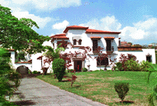

HOME FUNDEF
¿Qué es FUNDEF ?
¿Qué es FUNDEF ?
 FUNDEF, La Fundación de Etnomusicología y Folklore, es una institución destinada a la investigación, preservación y difusión de la cultura tradicional popular de Venezuela, América Latina y el Caribe. Convertida en Fundación adscrita al Consejo Nacional de la Cultura (CONAC) en 1990, FUNDEF continúa la labor iniciada en Venezuela por el Servicio de Investigaciones Folklóricas Nacionales en 1946, bajo la dirección de Juan Liscano y reune más de cuarenta años de trabajo y dedicación por Luis Felipe Ramón y Rivera e Isabel Aretz, así como de investigadores de Venezuela y Latinoamérica.
Desde 1973, FUNDEF opera como centro de dos organismos internacionales: el Centro Interamericano de Etnomusicología y Folklore (CIDEF), de la Organización de los Estados Americanos (OEA), y la Comisión Nacional del Instituto Andino de Artes Populares (IADAP), del Convenio Andrés Bello.
La secuencia de las instituciones que siguieron a este primer organismo (Servicios), incluyendo a sus directores o presidentes, es la siguiente: